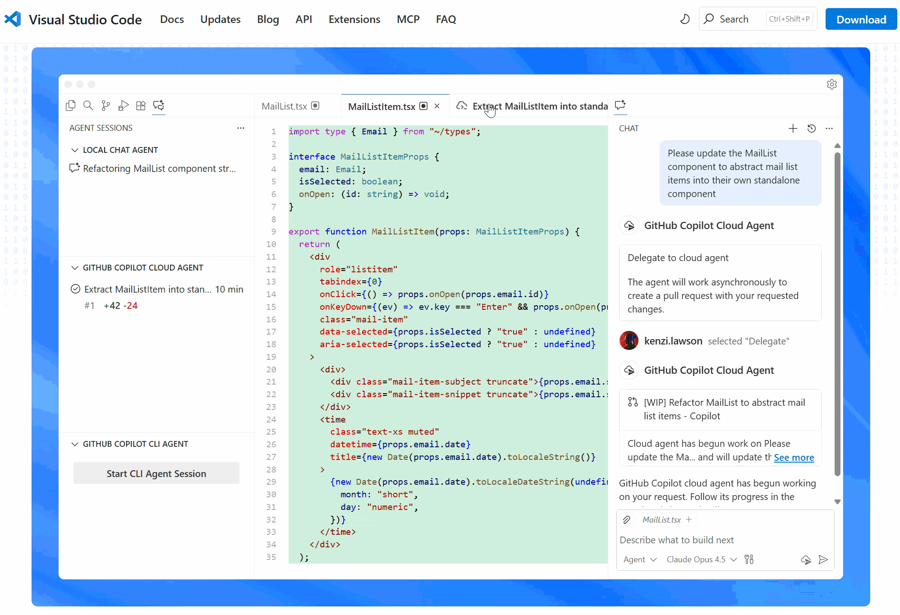
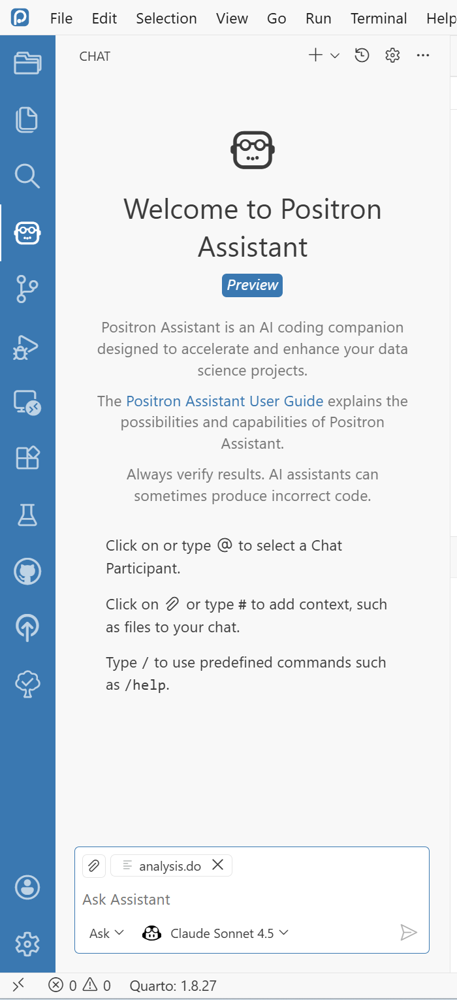
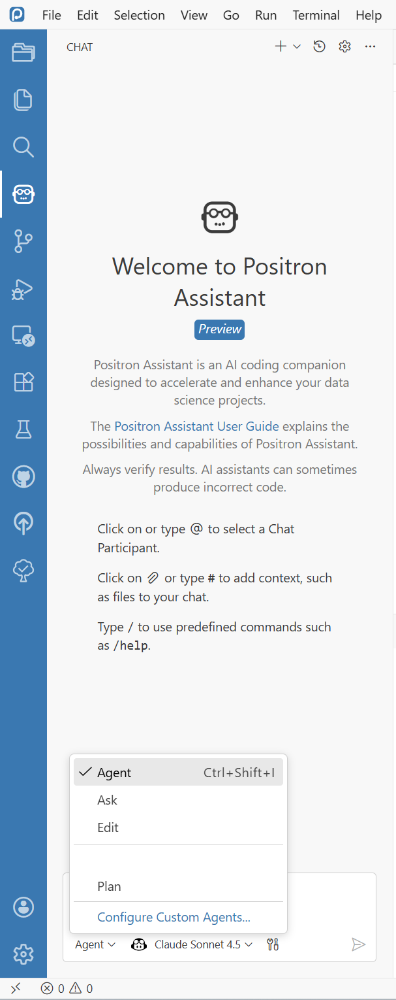

Revolutionize Your Analysis in Stata and R
AI Agent-Assisted Workflow with GitHub Copilot and Claude
Eduard Bukin ebukin@worldbank.org
Distributional Impact of Policies
Fiscal Policy and Growth Department
2026-02-05
The goal
There are many IDEs ➔




💬 AI: Chat
Ask AI (Claude 4.5) through Github Copilot
Provides explanations, suggestions, and code snippets.
Integrates with project context, and code.
Learn more:
 
💬 AI: Agent
Executes instructions.
Acts independently
- Runs code
- Fixes errors
- Learns
- Reasons
See more in the live demo!
 
🔌 Model Context Protocol (MCP)
MCP is a universal adapter for AI—Anthropic— that connects data flows:

🤖 GitHub Copilot | Anthropic Claude
GitHub Copilot
- ✅ WB-approved
- 🌐 github.com/worldbank
- 🤝 Uses Claude | GPT
- 🔌 Integrates with IDEs
- github@worldbank.org
- AI @ WB: ai.worldbank.org
Choose your LLM:
- 🧠 Claude Sonnet/Haiku/Opus
- 💡 OpenAI GPT-4/o1…

Live Demo: Positron IDE overview